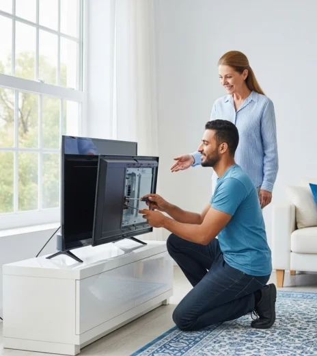

الـ شاشة تلفزيون بقت جزء أساسي من البيت المصري، أي عطل فيها بيبوظ الروتين اليومي وممكن يحرم الأسرة من المتعة. علشان كده، خدمات صيانة شاشات تلفزيون بقت ضرورة في كل بيت. إحنا في مركز صيانة شاشات تلفزيون بنقدملك خدمة مضمونة واحترافية في تصليح شاشات تلفزيون. اتصل بينا دلوقتي على 19580 وهتلاقي الحل السريع.
حجز موعد صيانة الآن
ممكن تلاقي شاشة التلفزيون مش بتعرض صورة، هنا لازم تدخل من متخصص في صيانة شاشة تلفزيون أو إصلاح شاشات تلفزيون.
كتير من الناس بيلاحظوا إن الصورة مش واضحة أو الألوان باهتة. الحل بيكون من خلال تصليح شاشة تلفزيون عند فني معتمد.
لو شاشة التلفزيون بتفصل فجأة، ده معناه إنها محتاجة إصلاح أو فحص شامل في أقرب وقت.
إحنا في مركز صيانة شاشات تلفزيون بنوفرلك:
اتصل على 19580 وخلي جهازك يشتغل بكفاءة زي الأول.
التزام باستخدام قطع غيار أصلية مع أي تصليح شاشة تلفزيون أو إصلاح شاشات تلفزيون.
خدمة عملاء متاحة 24 ساعة لاستقبال طلبات صيانة شاشة تلفزيون.
فريق محترف متخصص في تصليح شاشات تلفزيون بدقة عالية.
خبرة سنين في صيانة شاشات تلفزيون بجميع الموديلات.
مع كل إصلاح شاشة تلفزيون أو صيانة شاشة تلفزيون هتاخد ضمان مكتوب يطمنك. كل القطع أصلية 100% علشان شاشة التلفزيون ترجع تشتغل بكفاءة بعد الإصلاح.